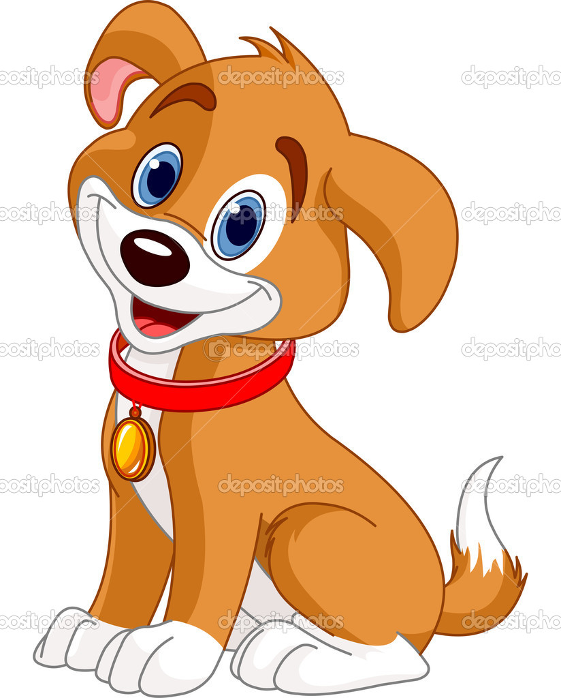

https://teachablemachine.withgoogle.com/models/WnmNMSnSY/

<html>
  <head>
    <title>Animal Sound Identification</title>
    <meta name="viewport" content="width=device-width, initial-scale=1.0">
    <link reul="stylesheet" href="https://maxcdn.bootstrapcdn.com/bootstrap/3.4.0/css/bootstrap.min.css">
    <script src="https://ajax.googleapis.com/ajax/libs/jquery/3.4.1/jquery.min.js"></script>
    <script src="https://maxcdn.bootstrapcdn.com/bootstrap/3.4.0/js/bootstrap.min.js"></script>
    <script src="https://unpkg.com/ml5@0.4.3/dist/ml5.min.js"></script>
    <link rel="stylesheet" type="text/css" href="style.css">
  </head>

  
    <div class="col-xs-12 header_div text-center">
      <h2>sound controlled animals </h2>
      <p>NOTE:Play different sounds like barking,meowing,roaring or moowing .</p>
    </div>
    <div class="main_div">
      <center>
      <br>
      <button class="btn btn-warning" onclick="startClassification();"> Start </button>
      <h3 id="result_label">Detected -  </h3>
      <h4 id="result_confidence">Detected voice of - </h4>
      <br>
      
      
      
      
    </center>
    </div>   
    <div class="copy_right_footer">
      Developed by - Aditi Yerram
    </div>
<script src="main.js"></script>
  </body>
</html> 


 

